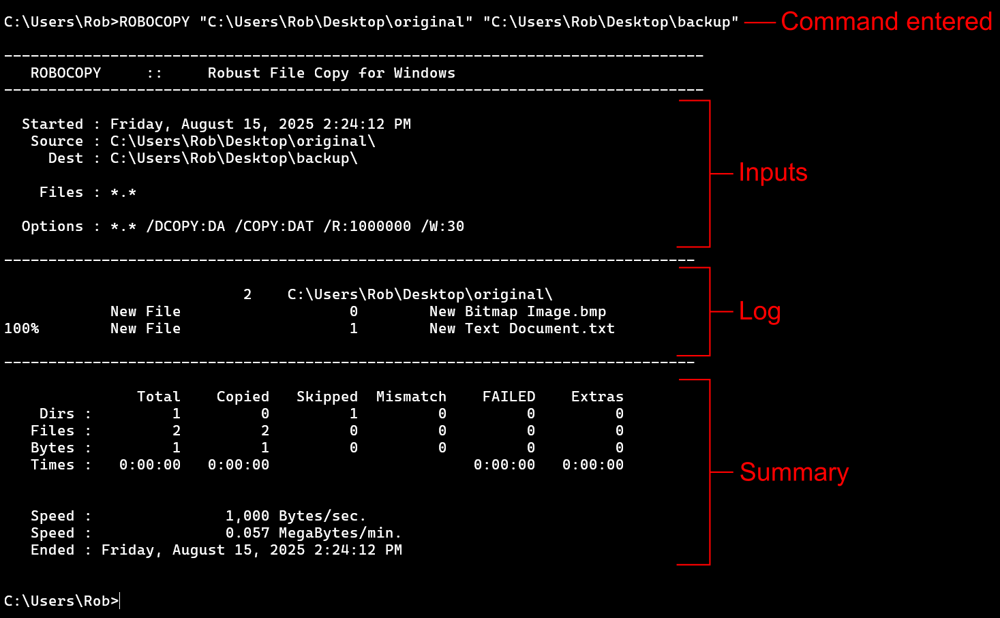

Lesson 4 - The ROBOCOPY Command
It's finally here, the moment we've all been waiting for. Those who didn't know they were waiting for it will soon find what has been missing in their lives. Yes, that's correct, it is now time to learn about the ROBOCOPY command.
ROBOCOPYstands for ROBust file COPY. I assume the middle O is because it made it sound cool. It is a much better and more versatile command than XCOPY and it has a ton of options. The vast majority of which we will not be needing. One huge benefit it has over XCOPY is that it produces a log of what happened and can mark files as being extras, old, new, and other stuff.
ROBOCOPY first try
To get started, we will do what we did for the previous two commands. We will just try it out with the source and destination and see what happens. Open the command prompt and type in the following command:
Remember that you need to change the two paths to whatever yours are. But sure you get the order correct. It's original first and backup second.
The result we get is that only two files have been copied. This is just like when we first tried out XCOPY. The two files in the original folder but nothing else has been copied. Still, the printout is quite a bit different so let's look at what the command prompt window is showing us now.
Here is the resulting print out I got when I did this:
First, notice there are three distinct sections. There's the inputs, the log, and the summary. We are going to hit these three in order.
Inputs Section
This section shows you the inputs you gave ROBOCOPY. This is really useful, epspecially as while developing our program, because it shows us how ROBOCOPY interpretted what we gave it. It's always possible that we are not going to be on the same page as ROBOCOPY and it's going to interpret our parameters differently then we expected. So be sure to check this section out if things are going the way you thought they should.
The first line just tells us the time and date that the command was run. This isn't generally going to be useful for our purposes but ROBOCOPY is used for more intensive application in large data systems where this could be useful to know. In any case, we have it if we need it.
The next two lines show us how our source and destination paths were interpretted. As long we keep using quotes, this should work out for us.
The Files : line is if we gave a file as some input to the command. We haven't done that here so there is nothing listed. If we wanted to supply a file with information about what to exclude, like we do with XCOPY, then it would show up here as an input. Though keep in mind there are other options for exclusion with ROBOCOPY to try before going that route.
The last line is the Options : line, and we see that although we didn't supply any options, there are several listed here anyway. We will go indepth about these options in future lessons but for now, here is what each one is doing:
- /DCOPY:DA copy the Data and the Attributes for folders
- /COPY:DAT copy the Data, Attributes, and Timestamps of files
- /R:1000000 retry a maximum of 1 million times if copying a file doesn't work
- /W:30 wait 30 seconds between each rety if copying doesn't work
Log Section
This section shows us the files that have been copied and their paths. It also gives us other good information.
- The 2 to the left of the path indicates there are 2 files in that folder.
- The next two lines are the names of the files in the folder named on the first line.
- We are told these two files are new files from the well named New File marker.
- The 0 and 1 are the respective file sizes in bytes of the file on that line. So the New Text Document.txt is 1 byte and the New Bitmap Image.bmp is 0 bytes. It's zero just because there is no actual picture there. The text file is 1 byte because I have a single letter typed into it.
- The 100% is the completion percentage of copying that file. There isn't one on the previous line, because that file has a size of 0 bytes and therefore doesn't have any actual data to transfer.
Summary Section
This section presents a summary of what ROBOCOPY did. It consists of a table and three rows of information below the table. If your files are all 0 bytes, you may not have the speed information shown in my screen shot.
As for the table, we have the following columns
- Total total number of things
- Copied how many were copied
- Skipped how many were skipped
- Mismatchhow many are mismatched. Mismatch means there is item is a file in source but a folder in destination.
- FAILED how many were supposed to be copied but couldn't for some reason.
- Extras how many are extras. Extras are things that are present in the destination but not in the source.
The rows are for
- Dirs directories, which is just the fancy word for folder as far as we care.
- Files just files
- Bytes size in bytes
- Times how long it took
From the print out I got, we see that ROBOCOPY encountered a total of 1 folder (directory) and 2 files. It didn't copy the folder it found so it either failed or skipped and we see that it got skipped. The two files found were successfully copied. The total size of everything was 1 byte and all of that single byte was copied.
So the table is pretty nice to have. Not super helpful for such a simple first run but things get more complex, it's certainly nice to have it.
Below the table, we see the speed given in bytes per second and in megabytes per minute. We aren't going to care too much about the speed things transfer at since we are after a backup program that will be run often and will therefore not have to copy a ton of data on a regular basis.
The last line is just the date and time it ended. We see that it ended at the same time it began, but probably just took less than a second. This makes sense since we only copied 1 byte of data.
Copying Folders
It turns out that, just like with XCOPY, we can use /S to copy folders and /E to copy empter folders too. The fact these are the same is a specific choice on the part of the people behind the command but don't get used to the idea that options with the same letter do the same things as we move forward.
Leave the two files we have already copied in the backup folder and copy over everything using the /E option. This is the print out I got when I ran it:
The options line in the inputs section now includes the /S and /E options. Even though we only included the /E option, ROBOCOPY automatically includes the /S option with it.
This is the same behavior that XCOPY had, we just couldn't tell because we didn't have a list of the options it actually applied. The reason it includes /S is because of the wording in the help for the /E option. Recall from the
Backup Commands
lesson that the wording on /E for XCOPY is that it Copies directories and subdirectories, including empty ones. This is the same wording as for ROBOCOPY. So what happens is that when a folder is encountered, /S is the option that says to copy it, and /E is the option to copy if it is empty. So you get /S for free though you could specify it to have the same effect if you wanted to.
Our log section is longer this time. Notice we still have the "original" folder at the top which is the folder we are copying from. There are 2 files found in that folders. Since they were already in the backup, they didn't need to be copied, so they aren't included in the log.
The next line is the first folder, "empty" which contains no files, hence 0. Notice that it recognizes the folder as being new to the destination with the New Dir marker.
It then goes on to the next folder, "f1" which contains 2 files. We indent for the files and copy them one-at-a-time. In this case, the two documents have non-zero size.
The next thing is any folders within "f1" which means we do the "f1-empty" folder which has no files.
Having no new content in "f1" it goes back and starts in "f2" where it continues the process.
It starts at the initial location, "original" in our case, then systematically goes through each folder looking for new content. When it reaches the end of a branch, it goes up a level until a new branch is encountered.
You might think it should indent the folders as it goes and while this could be visually helpful, it would quickly lead to visual issues after even a few nested folders. The indentation would eventually run into the right side of the window and wrap around to the left side, making it extremely difficult to read the printout at all. Since it proceeds so systematically and predictably, we can usually find a particular folder or file in the log without much trouble if we would need to do that.
The summary section shows that a total of 6 folders, 6 files, and 21.1 kilobytes were found. It copied 5 folders, skipping 1 of them. It copied 4 files, skipping two of them. It skipped 1 byte of data.
The two files skipped were the two files copied from the previous run, one of which had size of 1 byte so that's were the byte is coming from. What about the directory, err... folder?
Why skip main folder?
It seems odd at first, but ROBOCOPY will report the main folder as skipped. So it will always say that the folder "original" has been skipped. This actually is sensible in that we aren't actually copying a folder named "original." What I mean is we aren't expecting there to be an "original" folder present in the backup folder once everything is copied. We are copying the contents of the "original" folder, but not the actual folder itself. Therefore it skips it. Why then should it be reported as having been found in the "Total" column? If we look at the log section, we see that it starts with the "original" folder. So since it has to look in that folder for content, it must detect that folder, hence it gets added in as a folder in the "total" column, but isn't actually being copied, so get's "skipped."
We will cover options in the next few lessons. To round out this lesson, run the ROBOCOPY command again without removing anything from the backup. we get something like that shown in the following screenshot.
In the print out, we see that the log shows no new files or folders, but still dutifully looked through every folder and counted the files for us.
The summary section has the same total information, but this time skipped everything since it was already in the backup folder.
Now open one of the documents in the original folder and change some minor thing, for example add a letter to a text document or a box to an image file. Then save the file and run the command again.
You will see that the printout tells us that ROBOCOPY detected a new file and it was copied to the backup.
In this way, ROBOCOPY can be used to copy only those files which have changed since the last time the backup was made.